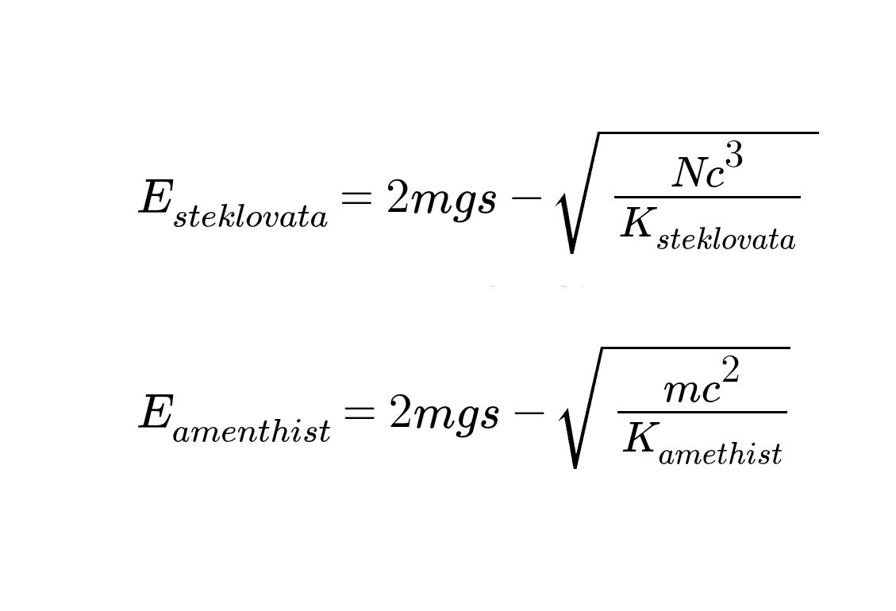
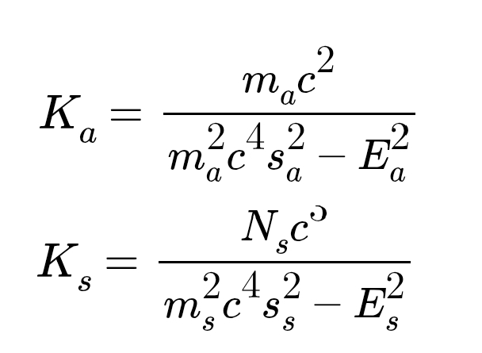

ДОКУМЕНТЫ МТАМ
Аметист
Аметист — минерал, обладающий особыми свойствами.
В 2023 году была открыта аметистовая энергия.
Физические свойства
Аметист обладает особыми физическими свойствами. В 2023 году в результате экспериментов, проведенных с целью узнать, какая энергия влияет на силу всемангового тяготения.
Закон стекловатно-аметистового энергитического равновесия
Был выявлен особый закон — закон стекловатно-аметистового энергитического равновесия. Данному закону соответствуют следующие формулы:

Для коэффициентов также были выведены формулы:

«Значение энергии стекловаты во Вселенной всегда равно значению энергии аметиста во Вселенной»,
— Закон стекловатно-аметистового равновесия
автор - KecoBcTaBpo